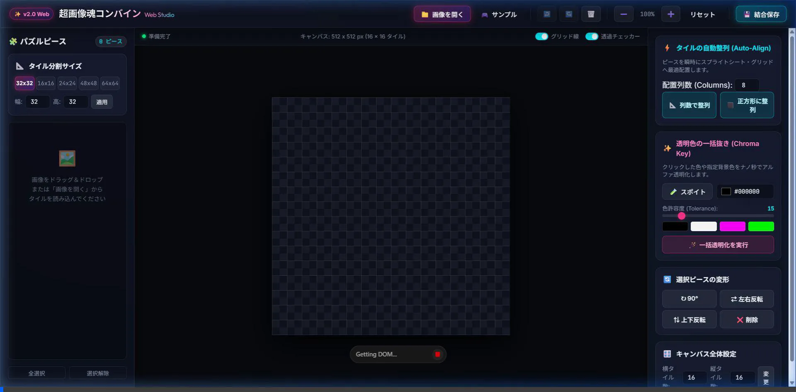
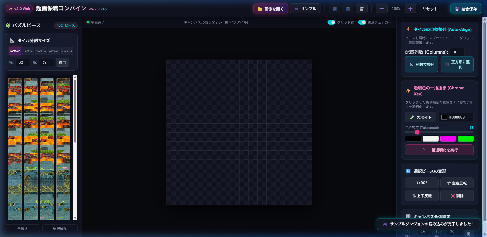
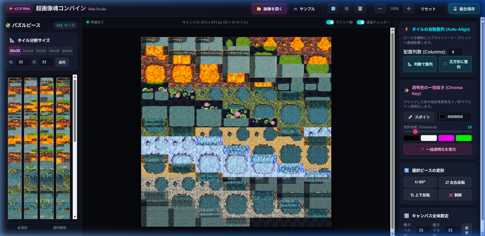
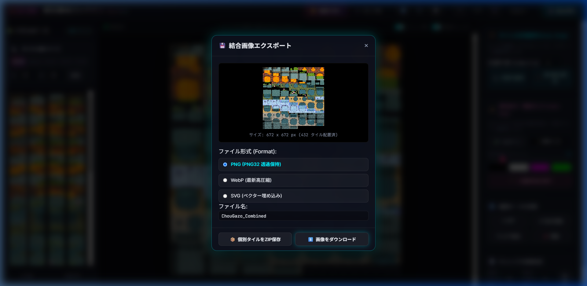
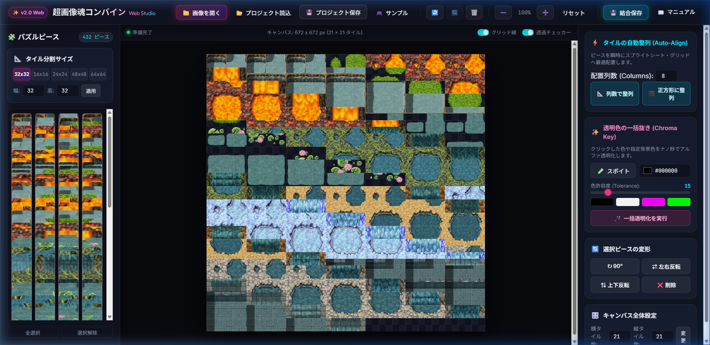

OFFICIAL USER MANUAL & INTERACTIVE GUIDE
超画像魂コンバイン Web Studio
完全操作マニュアル
パズルのように直感的にタイル画像を分割・再結合できる超画像結合ツール。
タイルの自動整列、クロマキー一括透明化、現代フォーマット（WebP/PNG32/SVG/ZIP）の全機能を分かりやすく解説します。
DEMO VIDEO
🎥 実際の操作フロー（実機録画）
ブラウザ上での「サンプル読み込み ➔ 432ピース自動スライス ➔ 21x21正方形自動整列 ➔ クロマキー一括透過 ➔ 結合エクスポート」の一連の流れをそのまま動画でご確認いただけます。

※アニメーションWebP動画として全自動ループ再生されます
STEP 1
画像の読み込み ＆ タイル自動分割
ドラッグ＆ドロップで一発スライス
- ▸ ヘッダーの 📁 画像を開く ボタンをクリック、またはブラウザ上に画像（PNG, JPG, WebP等）をドラッグ＆ドロップします。
- ▸ 左サイドバーの「タイル分割サイズ」（32x32, 16x16, 24x24, 48x48, 64x64、またはカスタム幅・高）を指定すると、画像が瞬時にグリッド分割されます。
- ▸ 🎮 サンプル ボタンを押すと、付属のダンジョンタイル画像（432ピース）が即座に読み込まれてすぐにお試しいただけます！

STEP 2
⚡ 新機能 ①: タイルの自動整列 (Auto-Align)
バラバラのピースをワンクリックで整然と配置！
- ▸ ⬛ 正方形に整列: ピースの総数（例: 432個）から、最も正方形に近い美しい形状（例: 21×21グリッド）を自動計算し、キャンバスを自動拡張して一発パッキングします！
- ▸ 📐 列数で整列: 「配置列数」に任意の数（例: 8列、16列など）を入力してボタンを押すと、指定した列数で上から順番に規則正しくスプライトシート化します。
- ▸ もちろん、パレットからキャンバスへマウスでドラッグ＆ドロップして、自由な位置にパズルのように手動配置することも可能です。
STEP 3
🪄 新機能 ②: 透明色の一括抜き (Chroma Key)
不要な背景色（黒・白・緑等）をナノ秒でアルファ透過化！
- ▸ 🧪 スポイトツール: ボタンを押して画面上のピクセルをクリックするだけで、透明にしたい背景色をピンポイント抽出できます。
- ▸ クイックカラープリセット: 黒抜き・白抜き・マゼンタ抜き・グリーンバック抜きをワンクリックで選択可能。
- ▸ 色許容度 (Tolerance) スライダー: 0〜100%で調整可能。微妙な影やアンチエイリアスの色残りもユークリッド色距離で綺麗に透過処理します。
- ▸ 🪄 一括透明化を実行 を押すと、配置された全ピースの背景が一瞬で透明（透過チェッカー模様）に切り替わります！

STEP 4
💾 新機能 ③: 現代画像フォーマット対応エクスポート
WebP・PNG32・SVG・個別ZIPダウンロードに対応！
- ▸ ヘッダー右側の 💾 結合保存 をクリックすると、美麗なエクスポートプレビューモーダルが開きます。
- ▸ PNG (PNG32): 透過情報を100%保持した高画質可逆圧縮画像。ゲームタイルやアセットに最適。
- ▸ WebP: Google提唱の最新高圧縮フォーマット。品質スライダー（10〜100%）連動で超軽量保存。
- ▸ SVG: ベクター形式として結合結果を保存。
- ▸ 📦 個別タイルをZIP保存: キャンバス上の全タイルを `tile_x0_y0.png` のような個別ファイルに一括切り出ししてZIP圧縮ダウンロードします（JSZip内包・オフライン対応！）。

STEP 5
💾 プロジェクトの保存・再開 ＆ 旧バージョン（*.tilemap）完全互換
作業状態をまるごと保存していつでも再開！
- ▸ 💾 プロジェクト保存 (Ctrl + S): 現在のタイル分割設定、配置された全ピース画像（Base64内包）、回転・反転状態を1つのファイル（*.tilemap）にまとめてダウンロード保存します。
- ▸ 📂 プロジェクト読込 (Ctrl + O): 保存した *.tilemap や JSON ファイルを選択、またはブラウザ上にドラッグ＆ドロップするだけで、作業状態が100%完全復元されます。
- ▸ 🏛️ デスクトップ版（WPF版）互換: かつてのデスクトップ版『超画像魂コンバイン』で作成した旧形式の *.tilemap（XML形式）も自動判別！チップサイズ（ChipX, ChipY）やグリッドマス数（TileX, TileY）、背景色を正確に解析して復元します。

KEYBOARD
⌨️ キーボードショートカット一覧
| 操作 | ショートカットキー | 説明 |
|---|---|---|
| プロジェクト保存 | Ctrl + S | 現在の全作業状態を *.tilemap としてワンタッチ保存します。 |
| プロジェクト読込 | Ctrl + O | 保存したプロジェクトファイル（*.tilemap）を開いて再開します。 |
| 元に戻す (Undo) | Ctrl + Z | 直前のタイルの配置・整列・透過・削除操作を元に戻します。 |
| やり直し (Redo) | Ctrl + Y または Ctrl + Shift + Z | 取り消した操作をやり直します。 |
| タイルの削除 | Delete または Backspace | 現在キャンバス上で選択されているタイルを削除します。 |
| ズームイン / アウト | Ctrl + マウスホイール | キャンバスの表示倍率を拡大（最大600%）または縮小（最小25%）します。 |